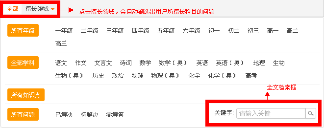
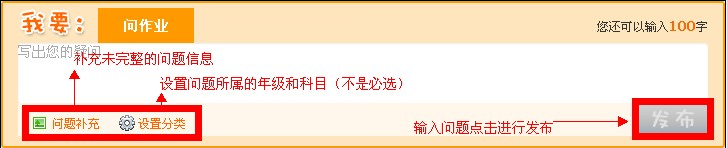
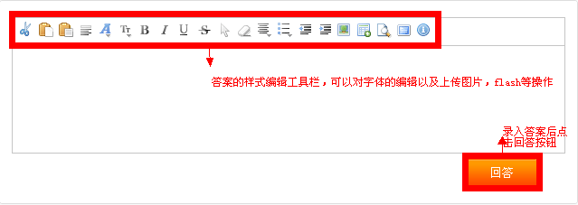
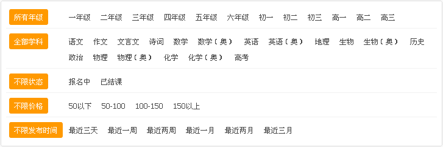
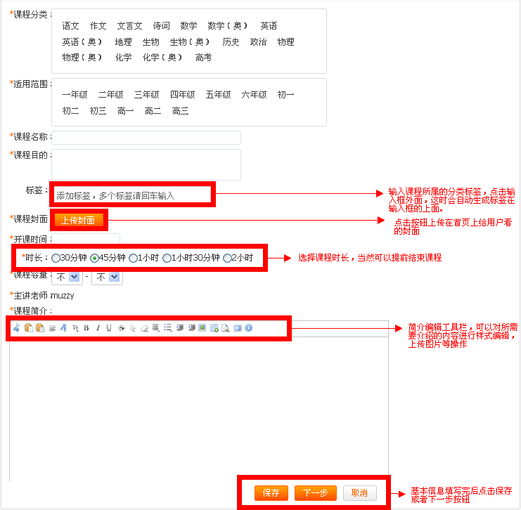
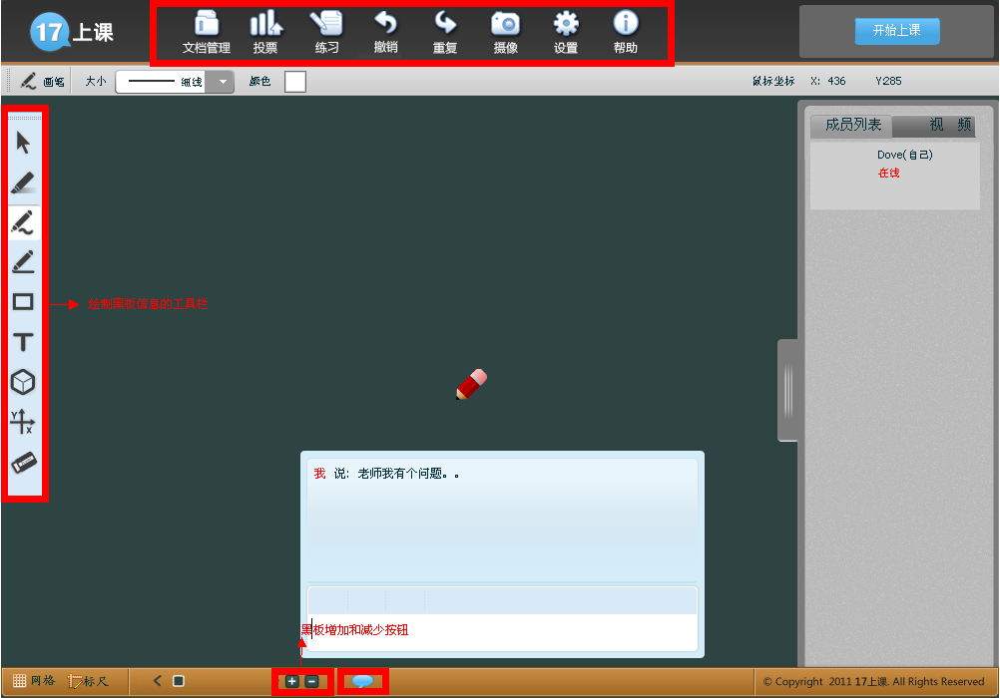

1.全文检索：在网站上的“搜一搜”导航栏点击问题导航进入问题首页，在搜一搜导航栏上面输入想要搜索的内容，点击“搜一搜”，问题列表会自动列出搜索的内容信息。
2.精确搜索：在网站上的“搜一搜”导航栏点击问题导航进入问题首页，如下面图所示你会看到一块搜索的目录块，分别点击要精确到的分类，问题列表会自动列出搜索的内容信息。

在网站上的“搜一搜”导航栏点击问题导航进入问题首页，会看到一个如下面图显示的输入栏，把你想要问的题目详细填写进去，设置分类（不是必须的），点击输入框右下角的发布按钮，直到提示发布成功字样。

在网站上的“搜一搜”导航栏点击问题导航进入问题首页，在条件检索块下面会看到所有用户发布的问题，点击问题列表右下面的“快速回答”按钮，会弹出一个快速回答的输入框，如下面图所示，把要解答的内容填写进去输入框，点击“回答”按钮，直到提示成功字样。

在网站上的“搜一搜”导航栏点击问题导航进入问题首页，在条件检索块下面会看到所有用户发布的问题，点击问题列表右下面的“在线解答”按钮，页面会引导用户进入问题详细解答页面，重复点击“在线解答”按钮，这时页面会弹出一块创建教室的窗口，输入所需要的资料，点击按钮，进入在线解答视频操作页面，详细操作请查看一起上课线上视频操作帮助，过程录入完毕后，问题答案列表会出现刚刚录制的视频信息。
1.全文检索：在网站上的“搜一搜”导航栏点击课程导航进入课程首页，在搜一搜导航栏上面输入想要搜索的课程内容，点击“搜一搜”，课程列表会自动列出搜索的内容信息。
2.精确搜索：在网站上的“搜一搜”导航栏点击课程导航进入课程首页，如下面图所示你会看到一块搜索的目录块，分别点击要精确到的分类，课程列表会自动列出搜索的内容信息。

在网站上的“搜一搜”导航栏点击课程导航进入课程首页，按钮位于课程类型的导航栏上面，点击按钮，会跳转到课程创建的导航页面上，页面上显示了“线下课程”、“转发或上传视频”、“在线课程”、“爱讲台”4块功能创建导航，找到在线课程按钮，点击按钮会进入在线课程创建页面，如下面创建在线课程图1所显示，填写完基本信息后点击保存或者下一步进入上传课件资料页面，如图片创建在线课程图2，目前只支持ppt，pptx，gif，png，jpeg，bmp等图片格式文件上传，上传完后点击下一步进入上传编写练习页面，目前该功能不开放，点击下一步，进入预览确认界面，如图3所示，确认没有问题后点击发布按钮，直到提示成功。

图片1
图片2
图片3
在网站上的“搜一搜”导航栏点击课程导航进入课程首页，找到课程类型为在线课程这样的视频文件，点击进入详细页面，找到页面上面的报名按钮，如果该课程为已经结束，会显示为观看课程按钮，
该视频工具为“一起上课网站”主要视频录制、在线教学的工具，在该工具上面，老师和学生可以进行多种不同的互动活动，比如说老师可以在黑板上面输入一些想表达的文字信息，画一些想要描绘的图像，上传一些附件信息到黑板，比如ppt，pptx，gif，png，jpeg，bmp等图片格式文件，老师可以在上面发起投票，发布练习等一些操作给学生，除了这些动作之外，整个课堂的时间全程视频和语音交互，使学生和老师能够更容易进行交流，下面介绍使用方法：用户在进行某些动作后，比如问题在线回答、聊天邀请进入教室、课程教学等，会进入如图一个界面，首先看到中间是一块黑板，这里是提供用户之间互动的地方，比如文字、图形、文件的展现都会出现在这块黑板上面，主要是供用户浏览的地方，左边工具栏，上面提供了一些简单的工具，画笔粉刷、图形、文字输入等，用户点击进行使用。黑板上面工具栏，只要提供了一些老师和学生之间互动的工具，比如老师进行文件上传浏览，发起投票练习等动作。右边是一个上课下课的按钮。右边是一个列表，展现的是目前正在上课的学生信息情况。下面是个简单的工具栏，主要功能是提供学生和老师时间的即时聊天以及新增黑板等操作。
